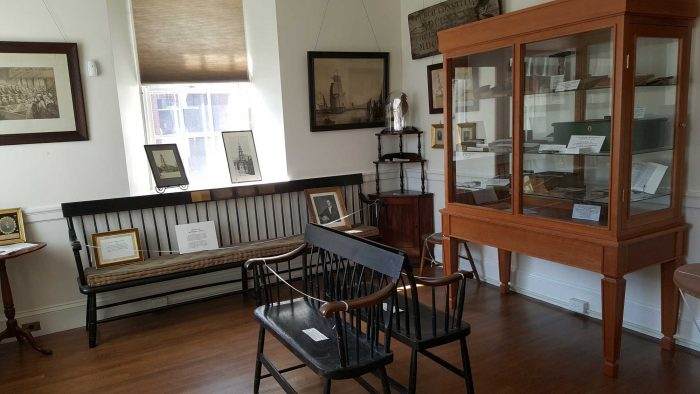

Tabernacle still has the bench on which Judson and many subsequent missionaries were commissioned, a cello that was played at that ceremony, a stuffed chicken that arrived alive from China as the pet of the daughter of a returning missionary (who subsequently used her chicken as a mascot for the Mission Movement here), and many, many letters and papers. All of these things are on display in the Historical Room, which is available to the public. Ple ase call the church office for hours.